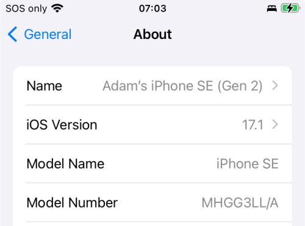

Compatible iPhone
Overview¶
Time Estimate
- 5 minutes, to check your device and iOS
- 20 minutes, if need to update your compatible device to a new iOS
- 10 minutes, if you need to order a Compatible Device
- 0 minutes, if you own an Android and will not use Apple products; check out AndroidAPS Documention
Summary
- Check your iPhone against the Compatible Device list
- For all devices, the newest iOS is strongly recommended
- Make sure the phone has good battery life
- Turn off automatic updates
FAQs
- "Can I use an android?" No. Check out AndroidAPS Documention.
- "Can I use an iPad?" No. Older iPads do not support Apple Health which is required for the Loop app. It may be possible with newer iPads and newer iOS, but this has not been tested.
- "Does my iPhone need a cell plan?" No. The Loop app works using communication on your phone with your CGM and your pump; no internet connection required. However, if access to Dexcom Follow or
Nightscoutmonitoring of the Loop app is a priority, then a cell plan may be desired. - What watches work with the Loop app? Only Apple watches work with the Loop app. With iOS 17, some of the older Apple watch series are no longer compatible. See: Watch Hardware and OS Requirements
Which Devices Are Compatible?¶
The Loop app requires an Apple device and uses the Apple Health app to store and retrieve your blood glucose and insulin data and to store your carbohydrate records. Older iPads do not support Apple Health which used to be required, and is still strongly recommended, for the Loop app. It may be possible to run Loop with newer iPads and newer iOS, but this has not been tested.
You need a minimum version of the mobile operating software, called the iOS, to be installed on your iPhone. The Loop app is compatible with iPhone devices with iOS 15.1 or newer.
- It is unusual for four different iOS to be supported
- The developers try to maintain support for the current and one-level earlier iOS
- Be prepared for your iOS 15 device to no longer be supported in future releases
- Be prepared for your iOS 16 device to no longer be supported in future releases
Compatible Device¶
All the devices listed below are currently compatible with Loop. They are separated by the available iOS for the phone. Those that only support iOS 15 or 16 may become incompatible for the next version of the Loop app, but can be used with Loop version 3.4.x.
These phones require iOS 18
- iPhone 16, all variants
These phones are compatible with both iOS 17 and 18
- iPhone 15, all variants
- iPhone 14, all variants
- iPhone 13, all variants
- iPhone 12, all variants
- iPhone 11, all variants
- iPhone XR, XS, XS max
- iPhone SE (3rd generation or later model; 2022 first release)
- iPhone SE (2nd generation; 2020 first release)
These phones are limited to iOS 16.
- iPhone X, without an extra letter
- iPhone 8, all variants
These phones are limited to iOS 15.
- iPhone 7, all variants
- iPhone 6s or 6s Plus, note the
s - iPhone SE (1st generation; 2016 first release)
- iPod Touch, 7th generation
Find Your iOS¶
Your iOS version can be found under the phone Settings -> General -> About display on the iOS Version line as shown below.

Do not use any of the beta iOS versions. (If you are uncertain what that means, then you are not using one.)
Developer Mode - Mac Build Only¶
When you build the Loop app using Build with Browser, you are not required to enable Developer Mode on the phone or watch.
With iOS 16 or newer and watchOS 9 or newer, Apple added a feature. If you want to know more, click on this Apple Link about Developer Mode.
When you build the Loop app on your phone from Xcode directly and then transition to or start with iOS 16 or newer, you need to have Developer Mode enabled. This is also a requirement to use the Loop app on a watch paired to your phone running watchOS 9 or newer. You will be told to enable it in the Build the Loop App: Prepare your Phone and Watch instructions.
Developer Mode with iOS 16 or newer, watchOS 9 or newer
If you already have the Loop app built with Xcode on your phone/watch when you update to iOS 16 or newer/watchOS 9 or newer or newer, you will be told that the Loop app requires Developer Mode to run.
You will not be able to run the Loop app on your phone (or watch) until you have enabled Developer Mode on the device(s).

Battery Health¶
Make sure the battery on your phone is solid. Your phone will become a critical health device - you want it to keep working.
- Make sure a charger and cord are in your diabetes supplies
- Consider buying a battery pack, keep it charged, and add it to your travel bag
Low Power Mode
With newer iOS, some people have reported the Loop app continues working in the background (phone locked) even in Low Power Mode. Others have reported they still get red loops. You can experiment to determine if your phone/iOS/app is able to maintain green loops in low-power mode. Otherwise, the best practice is to avoid Low Power Mode.
Use Automatic Time¶
Be sure to set the phone to automatic time. Do not try to defeat a game by modifying time on the same phone used to control your insulin.
Please read: The Loop Phone Must be on Automatic Time.
Turn Off Automatic Updates¶
Apple provides updates regularly to the iOS. Often, these updates include critical security patches in addition to improved new features.
Please be proactive - install updates as soon as the all-clear is given for using the Loop app with that iOS update.
If a limitation on your Mac prevents you from updating your phone to the latest iOS, consider using Build with Browser.
Why Turn off Automatic Updates?¶
- Once you accept an iOS phone update, you cannot go backwards
- Some iOS updates require updates to Xcode and macOS before people can build the Loop app on that device again
- It is rare, but iOS updates have caused the Loop app to stop working until other updates were made and the Loop app was rebuilt on that phone
- Turn off automatic updates so you can choose when to update your phone and avoid being caught without your Loop app
- Google the instructions for your device:
- Configure your phone to automatically download the updates
- Choose to install the updates manually
When iOS updates are released, the Loop and Learn Version Updates page is typically updated faster than LoopDocs. Check to see if a new update is causing an issue with the Loop app or your CGM before accepting the update from Apple.
Within a few days, the "All-Clear" or (very rare) the "WAIT there is a problem" message will be posted.
Next Step: Compatible Pump¶
Now you are ready to check if you have a Compatible Insulin Pump.